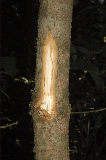
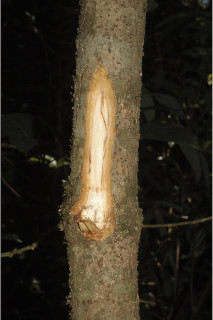

Trees up to 10 m tall.
10 ಮೀ.ವರೆವಿಗೆ ಬೆಳೆಯುವ ಮರಗಳು.
10 മീറ്റര് വരെ ഉയരമുളള മരങ്ങള്.
மரங்கள் 10 மீ. உயரம் வரை வளரக்கூடியது.
Bark smooth, brownish, lenticellate; blaze light orange.
ತೊಗಟೆ ನಯವಾಗಿದ್ದು ಕಂದು ಬಣ್ಣ ಹೊಂದಿದ್ದು ವಾಯುವಿನಿಮಯ ಬೆಂಡು ರಂಧ್ರಗಳ ಸಮೇತವಿರುತ್ತವೆ;ಕಚ್ಚು ಮಾಡಿದ ಜಾಗ ತೆಳು ಕಿತ್ತಳೆ ಬಣ್ಣದಲ್ಲಿರುತ್ತದೆ.
ശ്വസനരന്ധ്രങ്ങളുളള, തവിട്ട് നിറത്തിലുളള മിനുസമായ പുറംതൊലി, വെട്ട്പാടിന് ഇളം ഓറഞ്ച് നിറം.
மரத்தின் பட்டை வழுவழுப்பானது, ப்ரவுன் நிறமானது, லெண்டிசெல் உடையது; உள்பட்டை வெளிறிய ஆரஞ்சு நிறமானது.
Young branchlets terete, fulvous tomentose.
ಎಳೆಯ ಕಿರುಕೊಂಬೆಗಳು ದುಂಡಾಗಿರುತ್ತವೆ ಮತ್ತು ನಸುಗೆಂಪಿನಿಂದ ಕೂಡಿದ ಹಳದಿ ಬಣ್ಣದ ದಟ್ಟವಾದ ಮೃದುತುಪ್ಪಳದಿಂದ ಕೂಡಿರುತ್ತವೆ.
ഫള്വസ് രോമിലമായ, ഉരുണ്ട ഇളം ഉപശാഖകള്.
சிறிய நுனிக்கிளைகள் குறுக்குவெட்டுத் தோற்றத்தில் வளையமானது, உரோமங்களுடையது.
Leaves simple, alternate, spiral, subverticilate; petiole 0.8-1.2 cm long, flat, densely fulvous tomentose; lamina 11-24 x 2-6.3 cm, narrowly long elliptic-oblanceolate, apex narrowly acute to acuminate; base narrowly cuneate, margin entire, chartaceous, densely tomentose on midrib and nerves beneath, glabrous above except midrib; midrib raised above; secondary_nerves 7-14 pairs, very oblique; tertiary_nerves closely_horizontally_percurrent.
ಎಲೆಗಳು ಸರಳವಾಗಿದ್ದು, ಪರ್ಯಾಯ ಮತ್ತು ಸುತ್ತು ಜೋಡಣಾ ಉಪತರಂಗಿತ ವ್ಯವಸ್ಥೆಯಲ್ಲಿರುತ್ತವೆ; ತೊಟ್ಟುಗಳು 0.8- 1.2 ಸೆಂ.ಮೀ. ವರೆಗಿನ ಉದ್ದ ಹೊಂದಿದ್ದು ಚಪ್ಪಟೆಯಾಗಿದ್ದು ನಸುಗೆಂಪಿನಿಂದ ಕೂಡಿದ ಹಳದಿ ಬಣ್ಣದ ದಟ್ಟ ಮೃದು ತುಪ್ಪಳದಿಂದ ಕೂಡಿರುತ್ತವೆ;ಪತ್ರಗಳು 11-24 x 2-6.3 ಸೆಂ.ಮೀ ಗಾತ್ರ ಹೊಂದಿದ್ದು, ಸಂಕುಚಿತವಾಗಿ ಉದ್ದವಿರುವ ಅಂಡವೃತ್ತ-ಬುಗುರಿಭರ್ಜಿಯ ಆಕಾರದಲ್ಲಿರುತ್ತವೆ. ಪತ್ರದ ತುದಿ ಸಂಕುಚಿತವಾಗಿ ಚೂಪಾಗಿರುವುದರಿಂದ ಕ್ರಮೇಣ ಚೂಪಾಗುವ ಮಾದರಿಯಲ್ಲಿದ್ದು ,ಸಂಕುಚಿತ ಬೆಣೆಯಾಕಾರದ ಬುಡ ಹೊಂದಿರುತ್ತವೆ;ಪತ್ರಗಳ ಅಂಚು ನಯವಾಗಿರುತ್ತದೆ; ಮೇಲ್ಮೈ ಕಾಗದವನ್ನೋಲುವ ಮಾದರಿಯಲ್ಲಿರುತ್ತದೆ; ಪತ್ರದ ತಳಭಾಗದ ಮಧ್ಯನಾಳ ಮತ್ತು ಇತರ ನಾಳಗಳು ದಟ್ಟವಾದ ಮೃದುತುಪ್ಪಳದಿಂದ ಕೂಡಿರುತ್ತವೆ, ಪತ್ರದ ಮೇಲ್ಭಾಗದ ಮಧ್ಯನಾಳ ಹೊರತು ಪಡಿಸಿ ಮಿಕ್ಕೆಲ್ಲಾ ಭಾಗಗಳು ರೋಮರಹಿತವಾಗಿರುತ್ತವೆ; ಮಧ್ಯನಾಳ ಮೇಲೆದ್ದಿರುತ್ತದೆ; ಎರಡನೇ ದರ್ಜೆಯ ನಾಳಗಳು 7 -14 ಜೋಡಿಗಳಿರುತ್ತವೆ ಮತ್ತು ತೀರಾ ಓರೆಯಾಗಿರುತ್ತವೆ;ಮೂರನೇ ದರ್ಜೆಯ ನಾಳಗಳು ಹೆಚ್ಚೂ ಕಡಿಮೆ ತೀರಾ ಸನಿಹವಾಗಿದ್ದು ಲಂಬರೇಖೆಗೆ ಸಮಕೋನದಲ್ಲಿದ್ದು ಎಲೆದಿಂಡಿಗೆ ಅಡ್ಡವಾಗಿ ಕೂಡುತ್ತವೆ.
ലഘുവായ ഇലകള്, ഏകാന്തര ക്രമത്തില് സര്പ്പിളമായടുക്കിയതാണ്, ഉപതരംഗിതവുമാണ്; കനത്തില് ഫള്വസ് രോമിലമായ, പരന്ന, ഇലഞെട്ടിന് 0.8 സെ.മീ തൊട്ട് 1.2 സെ.മീ വരെ നീളം, പത്രഫലകത്തിന് 11 സെ.മീ തൊട്ട് 24 സെ.മീ വരെ നീളവും 2 സെ.മീ തൊട്ട് 6.3 സെ.മീ വരെ വീതിയും, വീതികുറഞ്ഞ ദീര്ഘ വൃത്തീയ-അപകുന്താകാരവുമാണ്, പത്രാഗ്രം വീതികുറഞ്ഞ നിശിതാഗ്രം തൊട്ട് ദീര്ഘാഗ്രം വരെയാണ്; പത്രാധാരം വീതികുറഞ്ഞ അപ്പാകാരമാണ്, അരികുകള് അവിഭജിതമാണ്, കടലാസ്പോലത്തെ പ്രകൃതം, കീഴെ മുഖ്യസിരയിലും ഞരമ്പുകളിലും കനത്തില് രോമിലമാണ്, മുകളില് മുഖ്യസിരയൊഴികെ അരോമിലമാണ്; മുഖ്യസിര മുകളില് ഉയര്ന്നതാണ്; വളരെ ചരിഞ്ഞ വിധത്തിലുളള 7 തൊട്ട് 14 വരെ ജോഡി ദ്വിതീയ ഞരമ്പുകള്; അടുത്ത തിരശ്ചീനപെര്കറന്റ് വിധത്തിലുളള ത്രിതീയ ഞരമ്പുകള്.
இலைகள் தனித்தவை, மாற்றுஅடுக்கமானவை சுழல் போல் அமைந்தது, சப்வர்டிசில்லேட்; இலைக்காம்பு 0.8-1.2 செ.மீ. நீளமானது, குறுக்குவெட்டுத் தோற்றத்தில் பிளேனோகான்வக்ஸ், உரோமங்களுடையது; இலை அலகு 11-24 X 2-6.3 செ.மீ., குறுகிய நீண்ட நீள்வட்ட-தலைகீழ் ஈட்டி வடிவானது, அலகின் நுனி குறுகிய கூரியது முதல் அதிக்கூரியது; அலகின் தளம் குறுகிய ஆப்பு வடிவானது, அலகின் விளிம்பு முழுமையானது, சார்ட்டேசியஸ், அலகின் அடிபரப்பிலுள்ள நரம்புகளில் உரோமங்களுடையது, அலகின் மேற்பரப்பில் மையநரம்பை தவிர அனைத்து பகுதிகளும் உரோமங்களற்றது; மையநரம்பு மேற்பரப்பில் அலகின் பரப்பைவிட உயர்ந்தது; இரண்டாம் நிலை நரம்புகள் 7-14 ஜோடிகள்; மூன்றாம் நிலை நரம்புகள் நெருக்கமானவை விளிம்பை நோக்கிய கிடைமட்டத்தில் இணையான பெர்க்கரண்ட்.
Flowers unisexual, dioecious, in umbels on short peduncle.
ಹೂಗಳು ಏಕಲಿಂಗಿಗಳಾದ್ದು, ಪ್ರತ್ಯೇಕ ಸಸ್ಯಗಳಲ್ಲಿರುತ್ತವೆ ಮತ್ತುಕಿರಿದಾದ ವೃಂತವುಳ್ಳ ಪೀಠಛತ್ರ ಪುಷ್ಪಮಂಜರಿಯಲ್ಲಿರುತ್ತವೆ.
കുറിയ തണ്ടുളള, ഛത്രമഞ്ജരികളിലുണ്ടാകുന്ന പൂക്കള് ഏകലിംഗികളാണ്, ഡയീഷ്യസും.
மலர்கள் ஓர்பாலானவை, ஈரகம் கொண்டவை; அம்பல் வகை மஞ்சரியில் காணப்படுபவை, குட்டையான மஞ்சரி காம்புடையது.
Berry, black when ripe, seated on cup shaped fruiting_perianth; seed 1.
ಬೆರ್ರಿಗಳು ಮಾಗಿದಾಗ ಕಪ್ಪು ಬಣ್ಣದಲ್ಲಿರುತ್ತವೆ ಮತ್ತು ಬಟ್ಟಲು ಆಕಾರದ ಪುಷ್ಪಾವರಣದ ಮೇಲೆ ಆಸೀನವಾಗಿರುತ್ತವೆ; ಬೀಜಗಳ ಸಂಖ್ಯೆ 1.
ഒറ്റവിത്തുളള കായ, കപ്പിന്റെ ആകൃതിയിലുളള പദിദളത്തില് ഉറച്ചുനില്ക്കുന്ന, ഉണങ്ങുമ്പോള് കറുത്തനിറമാകുന്ന ബെറിയാണ്.
முழுச்சதைகனி (பெர்ரி), கனியும்பொழுது, கருமை நிறமடைகிறது, கனியானது நிரந்தரமான ப்பீரியான்ந்த் கோப்பையில் அமர்ந்தவை; விதை ஒன்றுடையது.

 
